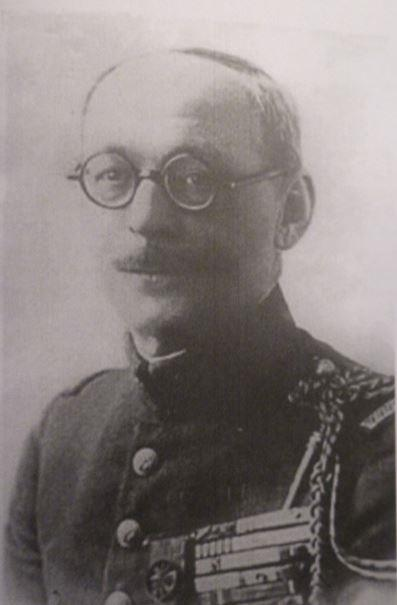
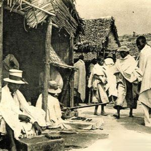
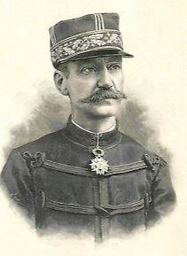
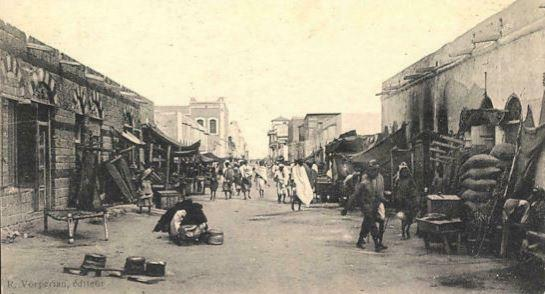
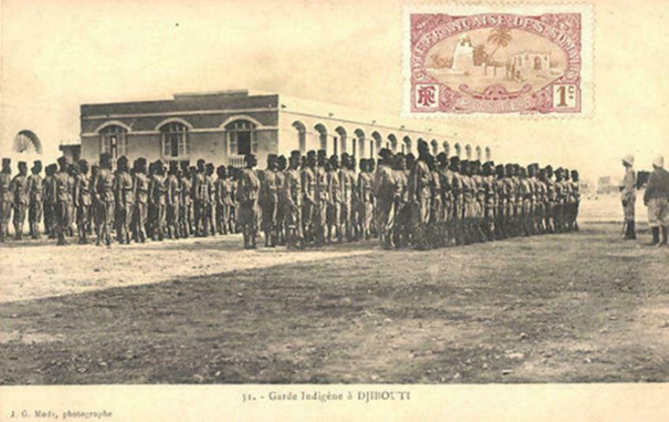
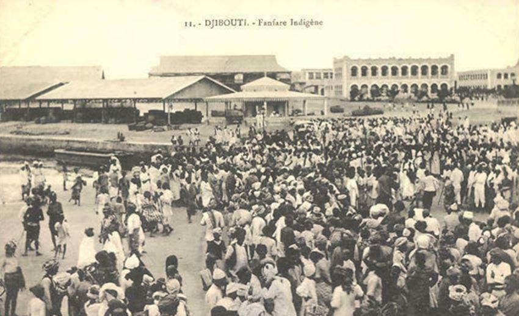
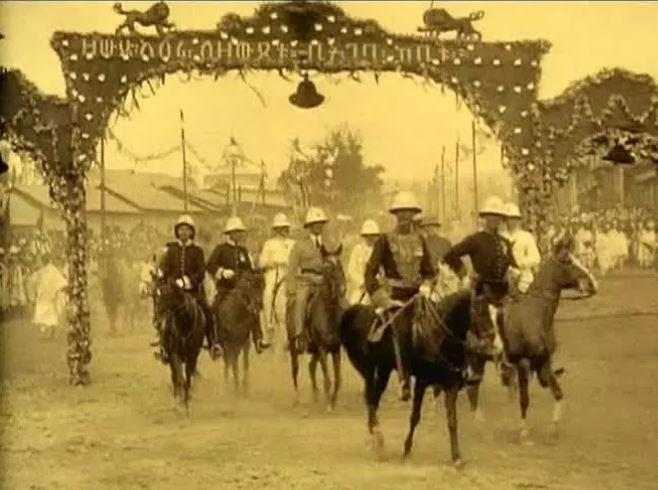
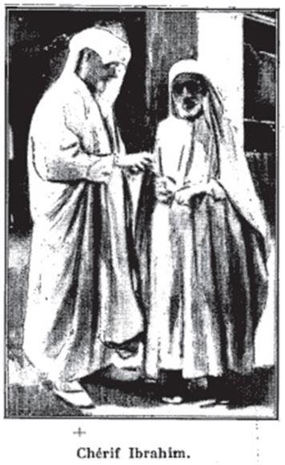

Le colonel Ibrahim Depui (1878-1947) « Le Pèlerin de la Mer Rouge »
par Patrick GUILLARD
L’AVENTURE ÉTHIOPIENNE
On doit à Albert Londres d’avoir fait connaître à ses lecteurs « l’étrange personnage » qui l’accompagna et lui servit de guide sur la côte de l’Arabie, de Djeddah à Bahreïn, en 1930 lors de son reportage sur la récolte des perles qu’il publia sous forme de plusieurs articles dans le Petit parisien puis, sous forme d’un roman Les pêcheurs de perles (ALBIN Michel. Paris 1931) dont la version originale comporte quelques photographies de CHERIF IBRAHIM, alias Laurent Depui.
Cependant cet épisode ne suffit guère à assurer à ce dernier une gloire posthume. Sans illusion sur lui-même, ni sur les autres, il n’était pas du genre à rechercher une quelconque notoriété, de par nature donc, et de part sa fonction : agent de renseignements du 5ème bureau en mer Rouge.
Il ne s’est donc, après le décès d’Albert Londres, trouvé personne, jusqu’à notre époque pour évoquer l’histoire extraordinaire de cet officier des troupes de marine de l’armée française et la place qu’il tient dans l’histoire des pays de la mer Rouge. On doit à Pierre Assouline d’avoir exhumé en quelques pages dans sa biographie d’A. Londres parue en 1989 aux éditions Balland, les aventures de cet officier. Il nous faudra attendre juin 2012 pour en savoir davantage sur cet homme grâce à la remarquable biographie de Jean-Yves Bertrand-Cadi (L’Harmattan) qui place Depui en pleine lumière pour notre grand profit. Signalons que l’auteur, magistrat, a été détaché en république de Djibouti au titre de l’assistance technique de 1982 à 1985.
C’est donc la vie de ce Prince de l’Aventure, qui, ayant répondu à l’appel des rêves et des vastes espaces fut associée à partir de 1910 à tous les bouleversements qui ébranlèrent les pays de la Corne de l’Afrique, que nous allons retracer dans cet article.
L’histoire de Laurent Depui commence le 05 février 1878 à Besançon en Franche-Comté, ville de garnison française où son père est sergent, maître cordonnier du régiment. Une famille modeste donc. Il a un frère, en 1880, René, qui décédera en 1974 à Madagascar. La famille qui vit à la caserne est fortement imprégnée de l’ambiance, des valeurs militaires, et des traditions franc-comtoises qui y règnent. Les deux enfants sont élevés dans un milieu où l’armée est honorée et exaltée. Ils lui doivent non seulement leur vocation militaire mais de solides convictions républicaines. Il ne semble pas qu’ils soient encombrés par une quelconque soumission à la religion, ce qui facilitera peut-être plus tard la conversion de Laurent. De famille pauvre, d’une région économique sinistrée, Laurent puis son frère s’engagent au 60ème régiment de Besançon, le 07 juin 1896. Très rapidement il est distingué par son chef de corps et est promu sergent fourrier. Mais, il ne supporte pas la vie monotone des casernes à une époque où dans les chambrées on évoque les exploits « de la Coloniale » En cette saison de la vie où l’on porte en soi des bouffées de rêves et d’espoir, l’envie lui prend d’aller servir en Afrique. Il est donc, à sa demande, versé dans l’infanterie de marine à Toulon puis, en janvier 1899 il embarque sur le NATAL pour Madagascar. Il passe par Suez et Djibouti, qui n’est qu’une mince bourgade s’étirant au ras de la mer, pour atteindre et débarquer à Diego Suarez alors en pleine construction.
 Madagascar au début du XXème siècleDurant les neuf années de son affectation à Madagascar le jeune jurassien pourra s’imprégner des problèmes inhérents aux pays d’outre-mer, apprendre la langue malgache et le dialecte arabe avec les Comoriens et les Swahili. Depui fait déjà preuve d’un esprit d’indépendance, taciturne et n’ayant que peu de camarade à la caserne, s’isolant facilement, il se retire dans des travaux intellectuels comme celui de commencer à écrire un dictionnaire franco-arabe. Il forge ainsi son endurance et sa personnalité.
L’époque n’est plus aux guerres coloniales mais aux soldats bâtisseurs, pacificateurs d’empire avec pioches et pelles sur l’épaule et combattant parfois les derniers rebelles. Laurent Depui s’investit à fond et avec enthousiasme dans cette tâche.
Lui et sa compagnie construisent ponts et routes dans tout Madagascar. C’est l’époque du gouverneur Gallieni. Depui, entrepreneur et chef d’équipe devient rapidement un meneur d’hommes, un spécialiste des natifs qu’il apprend rapidement à comprendre puis à commander.
En mars 1901, c’est un autre homme, transformé, sûr de lui, ambitieux et confiant en son avenir qui rentre en métropole pour se marier et passer le concours d’entrée à l’école militaire de Saint-Maixent. En 1904, alors qu’il est âgé de 26 ans, il est promu sous-lieutenant. Une telle réussite professionnelle traduit une volonté de fer, des efforts considérables. Probablement complexé par son origine sociale et son manque de culture, il ne cessera durant toute sa vie d’apprendre, en même temps qu’il continue de remplir ses obligations militaires. Intervient à ce moment de sa vie une importante décision qu’il va prendre et qui commandera toute son existence. Il adhère en mars 1904 à la Franc-maçonnerie. Il est initié à la loge « Sincérité, Parfaite Union et Constante Amitié Réunies » à Besançon. Cette loge dépend du Grand Orient de France qui est une obédience libérale, progressiste et ouverte aux évolutions de son temps. L’heure en France est à l’anticléricalisme, à la séparation de l’Église et de l’État, à la laïcité de l’éducation nationale. Il est difficile de savoir ce qui anima essentiellement la démarche de Depui, sa motivation et les influences qui orientèrent son choix. On observe toutefois en lisant sa biographie qu’il ne s’agit pas d’une formalité sans suite ou d’un effet de mode. Son engagement philosophique, car c’est cela la Franc-maçonnerie, marquera intensément comme nous allons le voir, toutes les étapes de sa vie professionnelle et personnelle.
En mai 1910, après deux affectations à Madagascar où il termine son séjour à Majunga, il est affecté à Djibouti, son épouse et ses enfants restant en France. A 33 ans, il se porte volontaire pour servir à Djibouti. Son séjour dans la Corne se terminera en 1917, date à laquelle il montera « au Front ». A la faveur de l’expérience acquise au sein de l’armée coloniale et au contact de populations très variées, il est devenu un expert dans l’instruction et la formation militaire des autochtones. C’est ce que réclame avec insistance la jeune colonie.
En effet, la situation politique de la région, son instabilité, la rivalité des grandes puissances en présence dans la Corne de l’Afrique font craindre aux gouverneurs Bonhour puis Pascal de devoir faire face à une situation insurrectionnelle dans la colonie, sans pouvoir, faute de moyen militaire, y faire face. D’où leur insistance à obtenir un expert dans l’instruction militaire.
Le 2 juin 1910 un arrêté est publié sur la question de la formation de la Garde indigène ou Milice. C’est une décision importante car elle consacre définitivement la présence française en Côte des Somalis et l’assimile, au plan de la défense, aux autres colonies.
Cet arrêté précise l’organisation de cette force armée, dont le budget est à la charge de la colonie, et pour laquelle les autorités parisiennes mettent à disposition des cadres militaires possédant une bonne connaissance des méthodes d’instruction et de commandement de ce type d’unité. Un capitaine, deux lieutenants, quatre sergents, deux caporaux et deux clairons débarquent à Djibouti en provenance du 3ème régiment de tirailleurs malgaches dont le lieutenant Laurent DEPUI.
On prévoit de recruter 250 gardes pour composer cette Garde. Ce type d’organisation s’inspire de ce qui a été mis en œuvre dans d’autres colonies. Le gouverneur souhaite un ensemble homogénéisé par l’équipement, une certaine discipline et une réglementation administrative ajustée sur celle de l’armée. Cette milice est destinée à devenir une force de maintien de l’ordre et non une force armée. Il lui faut également recruter des éléments ralliés à l’occupant. Projet difficile à mettre en œuvre dans un pays qui n’a jamais connu d’armée. Il faut chercher sur place les meilleurs éléments et donner une cohésion à cette troupe. Le recrutement de soldats, dont s’occupe plus particulièrement Depui, qui parle arabe, ne présente a priori aucune difficulté car on ne fait appel qu’à des volontaires. Il n’a rien comparable en Afrique où à l’époque pour recruter, on fait volontiers usage de la force ou de l’intimidation.
Sur la Côte des Somalis où la préoccupation des combats prend les hommes du berceau à la tombe, il n’est nécessaire de recourir à aucune coercition. Cela engendrant des soldats braves et endurants. Cependant un choix des recrues s’avère indispensable et si le panachage peut être source d’émulation et de succès, il peut induire des frictions dangereuses en rapport avec des incompatibilités culturelles encore solidement établies. Depui avait déjà bien remarqué et analysé cette situation à Madagascar et la constatera rapidement à Djibouti, surtout entre Danakils et Somalis. Ainsi lors de la création de la brigade, le gouverneur exige qu’en soit exclus les Issas et les Danakils. Ne sont admis à servir que les Yéménites, les Soudanais, les Gadaboursis et les Haber Awals. Chaque jour, des centaines d’hommes viennent solliciter un engagement ce qui permet un tri très sévère. A la fin de 1910, l’effectif est au complet. Commence alors la formation militaire et lorsque, la brigade fait l’objet d’une inspection de la part du général Winkler-Meyer venue de France en 1912, la satisfaction est totale.
À compter de l’entrée en guerre de la France, le 2 août 1914, et jusqu’au 14 décembre 1915, Depui commande cette brigade indigène et la troupe mobilisée de Djibouti. Henry de Monfreid le raille méchamment en se demandant à quoi pourrait bien servir une unité de défense de Djibouti. « Cette burlesque mobilisation locale n’a d’autre but que de retarder le départ du jeune officier. Sous ce ridicule prétexte de défendre Djibouti, ce jeune militaire a voulu retenir là tous les français qui voulaient aller faire leur devoir* » Les secrets de la Mer Rouge. Ses supérieurs n’en remarquent pas moins qu’il organise avec méthode et compétence la défense de la colonie. Lettre de félicitation du gouverneur et décoration de chevalier de la légion d’honneur lui sont adressées.
Dès 1913, le gouverneur charge Depui de dresser des cartes précises de la colonie qui lui valent des félicitations du ministère de la guerre. L’année suivante, de mars à juin 1914, il prend la tête de sa première mission géographique en Ethiopie. Il commence alors à se familiariser avec le pays, ses coutumes et surtout sa situation politique. Ces incursions répétées lui permettent de renseigner le gouvernement français avec une clairvoyance du futur étonnante durant toute la période 1914 -1917. L’agent de renseignements Depui est né. Cette période, rappelons-le couvre le court règne du prince Iyassou en Éthiopie, suite à la mort de Ménélik, que les Européens considéraient comme turco-germanophile et que l’aristocratie amhara du Choa soupçonnait de conversion à l’Islam.
*Je rappelle au lecteur que Henry de Monfreid par deux fois s’est fait réformer du service militaire. Une première fois, avant la guerre, en inhalant de l’acide provoquant ainsi des lésions pulmonaires décelables à la radioscopie, et une deuxième fois en pleine guerre par intervention des amis de son père. Ces faits, édifiants sur le patriotisme de Monfreid ont été rapportés par son dernier biographe Daniel Grandclément dans L’incroyable Henry de Monfreid : Grasset. PARIS 1990.
Depui dresse de courtes biographies des membres du gouvernement éthiopien avant le coup d’état de septembre 1916 qui portera le ras Tafari sur la première marche du trône, ainsi que des notes sur les Européens qui pourraient avoir une influence quelconque sur la situation politique du pays. Il décrit le prince Iyassou tel que nous le présenteront ensuite ses détracteurs et les hagiographes de Haïle Sellassié à savoir ivrogne, débauché, pusillanime, voire brutal et sanguinaire.
Le capitaine Depui indique, bien avant le coup d’état du 27 septembre 1916, qu’ « une action commune et énergique des Alliés est absolument nécessaire devant les effets de la propagande turco-allemande et l’intervention journalière dans les affaires politiques de l’ambassadeur d’Allemagne et de Turquie ».
Il signale également l’état d’esprit de l’aristocratie abyssinienne qui aurait demandé au métropolite de les délier de leur serment de fidélité et de conclure : « Plus aucune influence francophile ne pouvant arrêter, retarder une explosion de fanatisme musulman turcophile des régions Harrar-Somali-Danakil (c.à.d. aux frontières de la colonie) l’heure n’est plus à la propagande mais à l’action »
Par ailleurs, grâce à son réseau d’agents de renseignements qu’il a tissé avec l’aide de ZAHRA, sa femme yéménite, et par sa parfaite connaissance de l’arabe, il renseigne le 5ème bureau de ce qui se passe en Somaliland avec le Mad Mullah et de l’intention de Iyassou d’entrer en contact avec lui.
Quels services a-t-il donc rendus à l’impératrice Zaoditou et/ou au régent Tafari pour faire partie de la délégation française invitée, après le coup d’état, au couronnement de Zaoditou comme impératrice en février 1917, et de loger, non pas à la légation, mais à la résidence même de Tafari qu’il a connu au Harar.

Arrivée d’une délégation invitée au couronnement de l’impératrice
Avant ce moment historique dans le cours de l’histoire éthiopienne, Depui, en janvier 1916 avait quitté l’Afrique et s’était vu confier une mission de quatorze jours, ayant officiellement pour but d’étudier les transports à Aden. En fait, il participa au combat de DAR el-Hattoum contre les Turcs, le 13 janvier 1916, aux environs d’Aden.
C’est son premier contact, avec l’Arabie et avec les combats de la première guerre mondiale.
En ce qui concerne cette dernière et pour faire court, rappelons l’implication de Depui dans la constitution des BATAILLONS SOMALI, son départ pour le front en métropole en juillet 1916 (Salutations à Monfreid), son engagement à Douaumont en octobre 1916 à la tête de son bataillon qui connaîtra la gloire. Au total, ce sont dix-neuf actions d’éclat de la 4ème compagnie qui sont signalées par le rédacteur du journal des marches et opérations du bataillon. Depui qui a été blessé, est cité pour l’assaut de Douaumont, à l’ordre général de la 2ème armée en novembre 1916. C’est pendant que Depui est au front que l’Éthiopie connaît le coup d’état qui renverse Iyassou au profit du ras Tafari. Bien qu’absent des bords de la mer Rouge, Depui connaît tous les détails de cet événement, grâce à son réseau d’informateurs, visiblement fiable. Ainsi les précisions qu’il donne sur la défaite du ras Mikaël, le père de Iyassou, à la bataille de Sâgâlé le 27 octobre 1916 où l’utilisation des mitrailleuses vendues à Tafari pallia son infériorité numérique. Blessé, Depui est mis à la disposition du ministère des colonies en décembre 1906 qui le mute à nouveau à Djibouti comme chef de la mission de recrutement et commandant du Bataillon. Mutation qui explique donc sa présence au couronnement de l’impératrice Zaoditou en Février 1917.
LEUR CONVERSION À L’ISLAM
Depui et Monfreid se convertissent à l’Islam dès le début de leur séjour dans la Corne de l’Afrique sans que l’on sache exactement lequel a précédé l’autre. Henry de Monfreid est connu de la population locale sous le non d’ABD-EL-HAI, Depui sous celui de SHERIF IBRAHIM DEBOUI. Monfreid ne manque pas de faire connaître aux autorités religieuses qu’il est désormais musulman, mais il n’éprouve aucune attirance à l’égard de ses coreligionnaires (voir son livre intitulé La poursuite du Kaïpan). Il confiera plus tard à Freddy Tondeur « Il est évident que lorsque j’ai pris la décision de devenir musulman, ce n’était pas une conversion mais le seul moyen de gagner la confiance des peuplades au milieu desquelles je devais vivre … J’ai été obligé. J’ai voulu aller au Yémen, il a fallu pour cela que je me fasse musulman. On ne m’aurait pas laissé passer. Cela se serait terminé par une lance dans le dos ou une balle. (Voir Sur les traces d’Henri de Monfreid). Voilà qui est clair.
Depui, lui, vit dans un étrange dénuement, habitant avec sa femme ZAHRA une cahute au sol de terre battue dans le quartier de Bender Djerid, isolé de tout Européen. Depui a la conviction de n’accomplir sur terre qu’un parcours transitoire. Lui, fait de la religion son absolu. Cela lui impose de respecter ses devoirs envers Dieu et lorsque Monfreid met en doute la sincérité de la conversion de Depui, il confirme bien involontairement que ce dernier fréquente la mosquée régulièrement : « Il (Depui) fait ses dévotions à la grande mosquée d’Hamoudi en un point où, de la rue, par la porte ouverte on pouvait le voir… » Le Lépreux . Pareille adhésion à l’Islam peut en effet faire penser à une conversion relationnelle. Celle qui concerne, avant le mariage, les hommes voulant épouser une musulmane ou encore les femmes avant ou après leur mariage avec un musulman. Le général Catroux, qui comptera Depui parmi ses subordonnés au Hedjaz, semble partager ce point de vue. D’autres, qui l’ont connu durant sa vie publique, n’ont jamais douté de sa sincérité. Depui est très attaché aux pays arabes, peut être certes, par nécessités professionnelles mais probablement aussi parce que parlant la langue, et partageant la religion des gens qui l’entourent, il s’y sent en harmonie, de sorte que durant de nombreuses années il restera coupé de sa famille restée en France.
Il prendra sa retraite en 1934 mais sera nommé en janvier 1935 par le roi belge Léopold III, consul de Belgique à Djeddah. Il continuera ainsi à arpenter toute la région de la Corne de l’Afrique en toute quiétude jusque dans les années 40 et à rester dans l’entourage d’Ibn Séoud qui l’autorise plusieurs fois comme l’avait déjà fait le roi hachémite Hussein Ben Ali, à accéder aux lieux Saints et à accomplir le pèlerinage. Pour ces deux têtes couronnées, la sincère conversion de Depui ne semble à aucun moment être remise en doute. Depui est un des rares Européens convertis qui put accéder à Médine et La Mecque et en donner une description tant sur le plan matériel que sur le plan spirituel, dans les colonnes du Matin. Reportage que ne put accomplir Albert Londres. A la fin de sa vie, séparé de sa famille, se sentant étranger à l’environnement métropolitain, c’est en Tunisie qu’il rejoint l’Orient Eternel. Il mourra à Nabeul en 1947 à 69 ans. Il fut enseveli à même la terre, selon le rituel islamique, sa sépulture ne fit l’objet d’aucune inscription, évoquant ainsi la béatitude ensoleillée à laquelle ce nomade aspirait en terre d’islam.
ENFIN UN MOT SUR LA VIE SENTIMENTALE de Depui, discrète et sans histoire, alors que Monfreid, dans son œuvre littéraire et sa correspondance, s’est complaisamment étendu sur les charmes des femmes locales ayant agrémenté sa propre existence. Depui, marié en France et père de trois enfants, a pris à Djibouti une femme arabe yéménite, ZAHRA de la tribu de l’Iman Yahya. Elle vivra avec l’officier français de nombreuses années, démontrant ainsi la solidité du couple et l’amour que se portaient ces deux êtres, car là encore on aurait pu accuser Depui d’opportunisme. Il fait du renseignement pour le 5ème bureau français. Cette femme occupa une place très importante dans sa vie, lui facilitant compréhension et pénétration du milieu yéménite. Cette liaison avec Zahra s’est poursuivie dans une totale discrétion durant une longue période sans provocation de la part de Depui, avec l’indulgence de l’état-major. Le concubinage étant l’usage à l’époque dans la troupe coloniale, et cela avec l’acceptation de la part de la famille de Zahra, Depui s’étant fait musulman. C’est à cette compagne qu’il doit son destin hors du commun, à sa résilience et à son besoin d’aller de l’avant. Cette rencontre avec Zahra va bousculer son existence. À son contact et à celui des membres de sa communauté, son esprit s’éclaire et découvre peu à peu cette Arabie Heureuse dont on lui parle en permanence. C’est Zahra qui lui apporte un réseau exceptionnel de relations dans cette région du monde encore peu accessible à des Européens et c’est avec elle qu’il perfectionne son arabe au point d’écrire un dictionnaire franco-arabe. Ils auront ensemble un enfant FRANCE FATOUMA qui en 1933 épouse un riche commerçant yéménite de la tribu des Al Alawi que l’on dira prince d’une ville de l’Hadramout. Femme de caractère, elle réside avec son mari à Singapour au moment où les Japonais envahissent la Malaisie en janvier 1942. France Fatoum et ses trois fils, Zaid, Nabil et Faysal saisissent la chance d’un ultime convoi maritime pour se réfugier d’abord au Caire puis à Seattle aux États Unis où ses trois garçons acquièrent de brillants diplômes. Ils ne connaîtront jamais leur grand- père. Lors de son séjour au Hedjaz, Depui vivra avec une autre épouse musulmane ce qui ne l’empêchera pas de continuer ses relations avec Zahra qui, lasse de l’attendre finira par se remarier. En avril 1924, un jugement de divorce est rendu par le tribunal de la Seine à la requête de Lydie Parrot, l’épouse française, à laquelle il versera une pension alimentaire pour elle et son fils Marcel jusqu’en 1946.
Il n’y a rien de ce type dans les relations que Monfreid a pu avoir avec les femmes locales qui charmaient donc son existence à Obock puis à Dire-Dawa avant que son épouse s’installe à Obock. Aucune tendresse ne perse dans son œuvre entre deux êtres de sexes différents. On reste mal à l’aise lorsqu’il nous parle de ses enfants que ce soit de la mort dramatique de son fils Marcel noyé entre Obock et Tadjoura ou de sa fille Gisèle qu’il élève « à la dure ». Pudeur ou mépris de l’auteur ? En 1913 décrivant sa vie intime, il écrivait : « Il n’est pas étonnant que maintenant que j’ai évolué vers le sauvage, je préfère le corps des Africaines à celui de nos dames »
Tout donc opposait, au bout du monde, ces deux Français issus certes de milieux sociaux différents, Depui est d’une famille modeste et Monfreid d’une famille bourgeoise, mais la jeunesse, l’ardant tempérament, la soif des grands espaces propices à la méditation et à l’écriture auraient dû les rapprocher, les faire s’apprécier l’un et l’autre, il n’en fut rien.
La vie d’aventures hors du commun qu’ils ont menée tous deux, méritait d’être partagée. Ils se sont certes rencontrés et certainement jaugés à leur juste valeur car malgré les coups de canif à l’encontre de Depui qui émaillent son œuvre littéraire, on sent chez Monfreid un certain respect pour un personnage dont le parcours et la rigueur intellectuelle et morale ont dû, en son fort intérieur, l’impressionné.
L’un, Monfreid, conseillé par Taillard de Chardin et surtout Kessel devint célèbre par ses romans. L’autre qui avait rencontré et travaillé avec tant de responsables politiques du début du XXème siècle et qui avait tant de choses, lui aussi, à raconter pour les avoir vécues, resta dans l’ombre. Il nous fut présenté par son ami Albert Londres lors de la publication de son ouvrage Pêcheurs de perles. Mais Londres disparu prématurément en 1932 avant qu’il puisse l’inciter à continuer à écrire. En effet sur l’intervention de Londres, Depui avait accepté de publier dans le Matin six articles à l’issue de son pèlerinage à La Mecque. Ils étaient agrémentés de plusieurs photographies et eurent beaucoup de succès dit-on. Après la disparition tragique d’Albert Londres dans le golfe d’Aden, LAURENT DEPUI alias SHERIF IBRAHIM DEBOUI resta dans l’ombre. Il était temps qu’il entre dans la pleine lumière. Voilà la chose faite.
P.G.
Bibliographie sommaire :
BERTRAND-CADI Jean Yves : Le colonel Ibrahim Depui. Paris : L’Harmattan,2012.
BENOIST-MECHIN : Ibn Séoud, ou la naissance d’un royaume. Complexe, 1991.
BERHANOU ABEBE : Le coup d’état du 29 septembre 1916 ou le dénouement d’une crise. Addis Abéba : Annales d’Ethiopie, 2001.
CATROUX, général : Deux missions au Moyen-Orient. Paris : Plon, 1958.
GRANDCLEMENT Daniel :L’ incroyable Henry de Monfreid. Paris : Grasset, 1990.
JOINT-DAGUENET Roger : Histoire de la Mer Rouge, de Lesseps à nos jours. Tome 2.Paris : L’Harmattan, 1997.
JOLLY Laurent : Mémoire au Bataillon Somalie. Djibouti : résumé dans la revue « Djibout » N°81 ,p.19 de sa Thèse soutenue à l’université de PAU et des Pays de l’Adour, 2013.
LABROUSSE Henri (Amiral) : Le Mad Mullah du Somaliland. Pount de Robert Ferry. N°7 de 1969 et N°10 de 1970.
LONDRES Albert : Pêcheurs de perles. Paris : Albin Michel, 1931.
MAILHAC-RAGGINI Edith : Le capitaine Laurent Depui. Paris : Aresae, 1999.
MONFREID Henry de : Les secrets de la Mer Rouge, La poursuite du Kaïpan, Le Lépreux tout particulièrement. Paris : Grasset, rééditions récentes.
Partager cette page